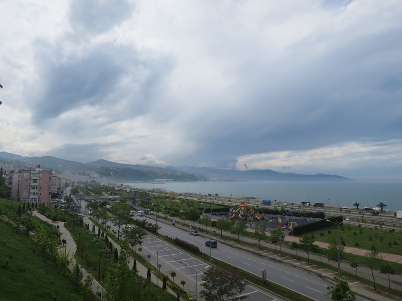

天陰寒冷。吃過早餐出去，Atatürk 廣場邊有很多食店，看見有人吃地道食品 menemem，一種當地的抄蛋，熱騰騰的，心想明天不如出來吃吧。
到廣場的 tourist information centre，超讚的，員工英文良好，有更好的地圖索取，以及詳細地教你一天的行程，如何去等。
在有麥當當和 Burger King 的那條街，有些旅行社，進入一間小店，買後天去 Istanbul 的機票，報的時間和價錢好像不太好，回酒店上網找，價錢果然升了，思前想後，還是選了不太早的班次，不想趕急。見樓下也有一間旅行社就入去，但裏面的兩位員工忙於吃他們的 menemem 不理我，所以還是回去剛才的那間買。
見到這旅行社貼著 sumela 及其他的地方 tour，覺得來得真不合時。在旅行社旁有一間甜品店，我叫了地道甜品 Laz böreği，3.5 TL 一件，雖然不懂叫發音錯，但總算吃得到，真的超好味。然後老闆還請我飲 turkish coffee。
行去博物館，經過很多商店的街，天越來越陰，開始下雨，剛巧去到博物館，即刻躲入去。博物館是由一所 mansion 改建，地庫是古物，地下和一樓是這建築和近代的展品。外面越下越大，我唯有在裏面待久一點。
趁雨細了，急急回去酒店避雨和取傘，再回來博物館旁的餐廳 Kakender 吃午餐，這餐廳的東西超好味，好可惜我不能每餐都來吃，十分多人，平日的話這裏的餐牌是每天不同，有十幾樣菜式，可以自選數樣，還有大和小的分量。
這一帶有很多食店，就算沒有遊客，都其門如市，不像那些單靠旅遊零售的地方，動不動就叫生叫死。
搭小巴去 Aya Sofya，Trabzon 也有個 Aya Sofya，只是同名，和 Istanbul 的是兩回事，但這個細小的教堂，也好值得看。我去的時候，是免費開放的。外面和裏面的壁畫，是和耶教有關的故事，畫旁都有文字描述。裏面改了做清真寺，在寺內範圍看上去是看不到圓頂，圓頂的畫給封了，不過若果進入清真寺旁邊保留的教堂部分，仍然能看得見。
Aya Sofya 坐落在海邊的小山上，周圍種植了花，有些用蘭花砌成的圖案。離開向東行回去市中心，經過一個足球場，剛巧有比賽，連場外都站和坐滿人。
經過舊城牆之間的地區，現在是一個頗大的公園，頗舒服，有天鵝和大白兔周圍走，不怕人，人也不會對牠們做什麼。
Trabzon 的 Bazar 區都是那樣，行完市集，去到海邊，遠處一大片黑雲正來臨，站多一會已經開始下微雨，趕回去 Atatürk 廣場，到 Cemilusta 餐廳吃三文魚，好好味，這餐廳的 Ayran 也是好好飲。送甜品 T，暖暖的，超好味。
